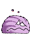
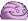
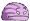

webgen / static website generator
static website generation made easy!
Sub Menu
Tips
- The basics pagecontains everything one needs to get going with webgen!
- Descriptions for plugins can be found in the plugins section
Latest news
2007-12-31: Minor release with feature enhancements. More...
2007-09-08: Small bug fix release. More...
2007-06-29: Some bug fixes and one small feature enhancement. More...
Links

General Information
| Plugin name: | Misc/SmileyReplacer |
|---|---|
| Author: | Thomas Leitner <t_leitner@gmx.at> |
| Summary: | Replaces smiley characters with actual smileys |
| Dependencies: | File/PageHandler |
| Parameters: | emoticonPack: nil |
Description
This plugin replaces smiley (ie. such sequences as ;-), :-), ...) with emoticons – graphics which express the same emotion as the smiley.
You can enable or disable the replacement of smileys globally by setting the parameter emoticonPack to an existing smiley package or nil. However, if a page has the
meta information emoticonPack, this meta info takes precedence over the global value. So, if the
replacement is globally enabled, you can disable it for a specifc page by setting the meta
information emoticonPack to nil (this was done for this page so that you can see the character
representation of the smileys). You can also change the used emoticon package for one page only by
setting emoticonPack to another package name.
Available Emoticon Packs
Following is a table showing the available smileys and their representation with various emoticon packages. The header shows the smiley you have to use so that you get one of the emoticons below it, depending on the used emoticon package.
Note: I have found these smileys in various places on the Internet and think they are free to use. If not, please mail me sothat I can remove them!
Credits:
- smellies: I have taken the smellies emoticons from Kebawe.com !
- crystal: The crystal emoticons are from http://kde-look.org/content/show.php?content=10681 .
- icqstyle: These are from http://kde-look.org/content/show.php?content=23226 .
| Smiley/Pack | :-@(angry) | 8-)(cool) | :'-((cry) | :*)(drunk) | :-D(lol) | :-O(oops) | :-((sad) | |-I(sleep) | :-)(smile) | :-P(tongue) | ;-)(wink) |
|---|---|---|---|---|---|---|---|---|---|---|---|
| bigeyes | |||||||||||
| crystal |  |  |  | ||||||||
| cyclops | |||||||||||
| glass | |||||||||||
| icqstyle | |||||||||||
| matrix |  |  | |||||||||
| smellies |  |  |  |  |  |  |  |  |  |  |